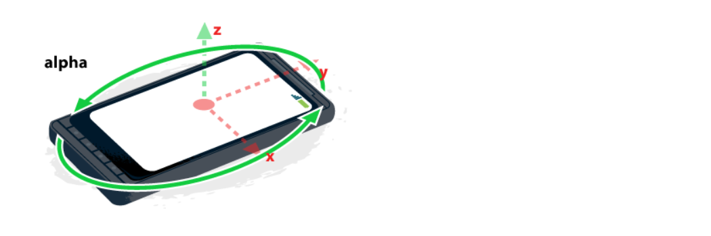
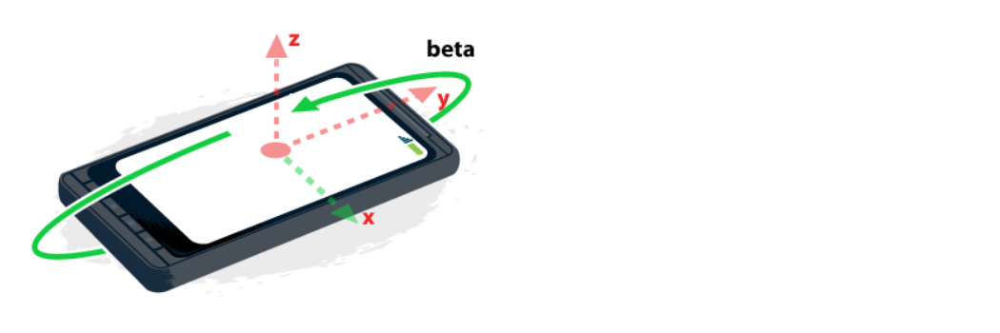
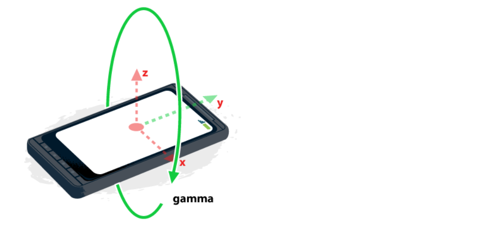

一、geolocation 地理位置
只有https和 file协议可以使用，http协议下不能使用
1. 获取地理位置的两种方法
GPS：台式机基本没有GPS，笔记本大多数没有GPS，智能机基本都有GPS
网络：粗略估计地理位置
2. 语法
// 参数1：成功的回调函数 |
二、deviceorientation 陀螺仪
苹果设备页面只有在https 的情况下才能使用这些接口
1. 语法
window.addEventListener('deviceorientation', function(event) { |
2. event三个属性
- alpha：取值0~360，手机平放，手机头指北alpha=0，指南alpha=180

- beta： 取值 -90~90，手机平方，手机向上旋转0<beta<=90，手机向下旋转 -90<=beta<0，

- gamma ：取值 -90~90，手机平放，手机向右倾斜0<gamma<=90，手机向左侧倾斜 -90<=gamma<0

三、devicemotion 手机摇摆
1. 语法
window.addEventListener('devicemotion', function(event) { |
2. acceleration 加速度
- acceleration.x
- acceleration.y
- acceleration.z
四、requestAnimationFrame 动画优化
背景：屏幕会1s刷新60次，也就是说在1s内屏幕最多能渲染一个运动60帧，如果运动超过60帧，必然会丢帧，这样运动就会变的不均匀，我们要优化这种现象
requestAnimationFrame(move)是均匀的，原因是requestAnimationFrame每秒60帧
兼容性极差，要使用需封装函数
1. 语法
var timer = null; |
2. 取消requestAnimationFrame cancleAnimationFrame(timer);
3. 如果在函数外添加一个setInterval(move,1000/60)，move同样是在1s运行60次，与requestAnimationFrame区别在哪
- 肉眼看不出变化但是底层会有变化，由于浏览器1s钟执行60帧 所以每一帧动画要小于1/60秒这样动画才能准时执行
- 如果move特别复杂，可能执行1帧所用的时间超过1s，由于setTimeout上一帧不执行完不会执行下一帧，所以setInterval就会往后顺延，让一帧动画用2s甚至更长时间去做
- requestAnimationFrame 有一个特殊队列，可以准时执行每一帧，不会出现setInterval的情况
五、localStorage 存数据到浏览器
可以在控制台application -> localStorage里面查看
1. 语法
localStorage.age=12; |
2. 特点
localStorage只能存字符串，所以传数组或对象时用json.stringify()将数组对象转换成json字符串，取出时用JSON.parse
localStorage存放到 自己的域下，不同的之间不可以跨域访问
3. localStorage与sessionStorage区别
localStorage：写入localStorage的数据会长期存放在浏览器(无论窗口是否关闭)
sessionStorage：需要临时存储的变量，每次窗口关闭时都会 自动清空
4. localStorage与cookie区别
localStorage发送请求时不会发送数据，cookie会发送所有数据
localStorage存放内容较多(5M左右)，cookie存放内容较少(大概4k)
六、history 回退
1. 浏览器:我们可以在控制台用history.back()，history.forward()来前进或者回退页面
2. 自己的开发的单页面应用 :运行时会导致页面出现很多状态，我们也可以用history来记录这些状态
3. 语法
添加状态
history.pushState({value:XXX},null,url)
注册倒退事件
window.addEventListener('popstate',function(e){
// 回退页面的内容
})
4. popstate/hashchange区别
- popstate:只要url变了,就会触发,永远先触发popstate
- hashchange:只要锚点变了就会触发
七、worker 异步线程
背景:同步执行会降低页面效率，所以用worker
1. 特点
- worker是真的多线程，不是伪多线程
- worker没有window对象，不能操作dom，不能读取本地文件，可以发ajax，可以计算
- 理论上worker里面可以嵌套worker 但是没有一款浏览器支持
2. 语法
主线程
var a=10000;
// 加载js
var worker = new Worker('./worker.js');
// 发送数据
worker.postMessage({
num:a
});
// 接收数据
worker.onmessage = function(e){
console.log(e.data);
}
// 停止worker
worker.terminate();支线程worker.js
// 接受数据
this.onmessage = function (e) {
var result = 0;
for (var i = 0; i < e.data.num; i++) {
result += i;
}
// 发送数据
this.postMessage(result);
// this.close();自己停止
}
3. 停止方式
- 主线程：worker.terminate();
- 支线程：this.close();自己停止